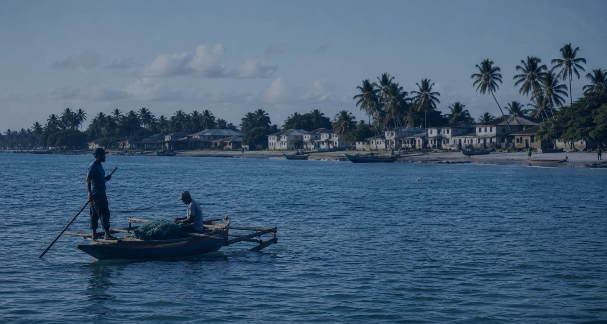
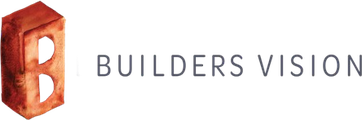
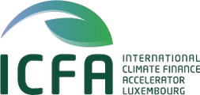

First close reached · July 2026
Driving resilience in Big Ocean States
An impact-led blended finance fund bringing meaningful scale, focus and transformative blue economy investment to the island nations that steward a third of the world’s ocean — and receive a fraction of the finance.
Target fund size, alongside a $10m Technical Assistance Facility
Big Ocean States in the eligible investment geography
Of the world’s ocean stewarded by these states through their EEZs
People the fund aims to benefit, alongside more than 12,500 jobs supported
What is Outrigger Impact?
Capital built for islands, not adapted to them
Outrigger Impact Fund I is an impact-led, innovative blended finance fund that aims to deliver meaningful scale, focus and transformative blue economy investments to Big Ocean States.
Small Island Developing States — more aptly, Big Ocean States — hold extraordinary ocean assets and face extraordinary climate exposure. The finance available to them has never matched either. Outrigger exists to change the arithmetic: to originate and structure investable projects on the islands themselves, to link them across regions so they reach institutional scale, and to protect private capital with a catalytic first-loss layer so that it can arrive at all.
The opportunity
A $3 trillion blue economy — and a $10 billion adaptation gap
The global blue economy is valued at $1.5 trillion a year and is expected to double by 2030. Big Ocean States are central to it, and structurally excluded from financing it.
Annual value of the global blue economy, expected to reach $3tn a year by 2030
Share of GDP the blue economy accounts for in some Big Ocean States
Estimated annual global adaptation finance gap for islands
Of the world’s coral reefs sit within these states, alongside over 20% of global biodiversity
Ocean territory at continental scale
Seychelles’ EEZ, at 1.34 million km², is nearly two and a half times the landmass of France. Kiribati controls an ocean territory larger than India. Jamaica’s EEZ exceeds the land area of the United Kingdom.
Willing partners, missing facility
Islands are increasingly willing to leverage ocean assets and develop the sustainable blue economy to address environmental and economic vulnerability. What is missing is a dedicated financial facility built for their scale.
Diversification is the adaptation
Economic concentration is itself a climate risk. Diversifying within the blue economy — fisheries, aquaculture, marine tourism, circular economy, ocean energy — is how these economies build durable resilience.
Our value
What Outrigger brings that generalist capital cannot
Dedicated blended finance for island states, encouraging entrepreneurship that generates market-based returns while enhancing ocean equity.
-
Originate and structure
We build investable project opportunities on the islands and accelerate the delivery of impact capital and project execution, rather than waiting for deals to appear.
-
Hub and spoke
A strategy of aggregation and linkage that expands proven projects across islands and regions, so that individually small opportunities reach investable scale.
-
Network and knowledge transfer
Experience, relationships and innovative solutions brought from global markets and from a team that has deployed ocean capital in the Global South since 2016.
-
A full-spectrum, unique geography
Finance across the whole blue economy for a set of ocean countries that no other fund serves as its primary market, delivering incremental co-investment from public and private investors.
-
Impact first, by design
An approach tailored to the needs of SIDS, with ESG and impact KPIs embedded into the investment process rather than reported after the fact.
-
A Technical Assistance Facility in step
Grants and repayable loans that build investment readiness, capacity and capability for early-stage projects with strong potential to scale — and a path for them into the fund.
Where we invest
Thirty-five Big Ocean States across three regions
Twenty UN SIDS Member States form the initial investment window. The remainder are reached through the hub-and-spoke strategy and the Technical Assistance Facility. At least 80% of the fund is deployed into ODA-eligible developing countries.
Hover, tap or tab to a point for its ocean and economic data.
Target sectors
Six sectors where impact and returns are the same trade
No more than 30% of the fund is committed to any single sector.
Sustainable blue infrastructure
The marine electric vehicle market is forecast to grow from $11.1bn in 2024 to over $38.7bn by 2032, a 16.9% CAGR. In SIDS the demand drivers are high fuel dependency, diesel bans in key marine parks, and national electrification goals.
Circular economy & blue technology
Global plastic recycling was worth $40bn in 2021 and is expected to reach $78bn by 2031. SIDS generate 48% more waste per head than the global average with limited disposal capacity — a commercial and environmental opportunity at once.
Ridge to reef
Global water and waste treatment is set to grow at a 7.3% CAGR to 2030. Only 32% of SIDS inhabitants are connected to wastewater treatment, so solutions here carry both critical environmental impact and strong commercial potential.
Ocean-based renewable energy
SIDS would save around $3.3bn a year by switching to renewables — 3.3% of GDP. Most receive 5–7 kWh/m²/day of solar irradiance, yet solar accounts for only 7–10% of installed capacity across each region.
Sustainable seafood
Global aquaculture is expected to exceed $260bn by 2026. Fisheries generate up to 12% of GDP in some SIDS, and in 2019 Pacific Islands exported 530,000 tonnes of seafood worth $1.2bn. Caribbean and Pacific states target 30% production increases.
Ocean conservation & ecotourism
Ecotourism was worth $172bn globally in 2022 and is expected to reach $374bn by 2028, a 13.9% CAGR. Travel and tourism in SIDS is worth roughly $30bn a year — over 17% of the global tourism market.
Investment models
How we make Big Ocean States investable
Four models, shaped to drive island investment with replicability and scale built in from the start.

Direct SME investment
Direct investments into scalable, growth-centred small and medium-sized enterprises already operating in the islands.
Island joint ventures
Leveraging blue business models and technology solutions to deliver systemic change, structured as island-based joint ventures.
Project finance
Focused project financing specifically for environmentally supporting infrastructure.
Investable conservation
Investments into ocean conservation that is economically sustainable — conservation with a business model, not a subsidy.
Capital structure
Blended by construction
A catalytic junior tranche, supported by development finance institutions and philanthropic partners, sits beneath a senior tranche designed for private investors — mobilising institutional capital into sectors private investors have traditionally underserved.
Catalytic first loss
Absorbs first losses on behalf of the senior tranche. Cornerstone commitments from the Nordic Development Fund and the Luxembourg–European Investment Bank Climate Finance Platform.
For private investors
For private investors seeking both financial returns and measurable impact outcomes, protected by the junior tranche.
Detailed terms, tranche sizing and target returns are restricted to professional investors. View as a professional investor
Fund status
Where we are
-
In place
Governance, partnerships and legal
Investment Committee established, governance and partnerships in place, legal documents finalised. Alter Domus Management Company S.A. acts as third-party AIFM.
-
June 2025
OTAF operational
The Technical Assistance Facility becomes operational, and is now supporting projects across the Caribbean, the Indian Ocean and the Pacific.
-
28 July 2026
First close reached
Cornerstone junior commitments from the Nordic Development Fund and the Luxembourg–European Investment Bank Climate Finance Platform.
-
2027
Final close · target US$100 million
The fund remains open to further commitments from professional investors ahead of final close.
Impact & ESG
Seven themes. Fourteen indicators. One framework built for islands.
Outrigger uses scientifically robust methodologies to measure impact across the portfolio, with ESG and impact KPIs embedded in the investment process rather than reported afterwards.
A SIDS-tailored framework
Seven impact themes with dedicated KPIs for reporting, derived from the fund’s own theory of change.
IFC performance standards
All investments must uphold sustainability and ESG standards including the IFC performance standards, and achieve best-practice certifications where relevant.
SFDR Article 8+
Contributing to the Sustainable Development Goals and to Global Biodiversity Framework targets.
A dedicated ESG team
Separate project monitoring and reporting of ESG progress, aligned with UNEP’s Sustainable Blue Economy Finance Principles.
OTAF
The facility that makes the pipeline possible
The Outrigger Technical Assistance Facility supports the capacity, capability and ecosystem for blue economy SMEs across Small Island Developing States — working in tandem with the fund to catalyse investment in early-stage projects.
Target facility size
Grants and repayable loans
Hectares of coastal and marine area targeted for enhanced protection
Workstreams: investment readiness, capacity building, ecosystem restoration, poverty alleviation
Anchor investors
Who committed at first close
Cornerstone commitments to the fund’s catalytic junior tranche came from two development finance institutions.


Technical Assistance Facility
Who backs OTAF
The Technical Assistance Facility is funded separately from the fund, by grant.


Partners & supporters
Who we work alongside
Organisations supporting Outrigger’s work in Big Ocean States. Inclusion here does not indicate an investment in the fund.

